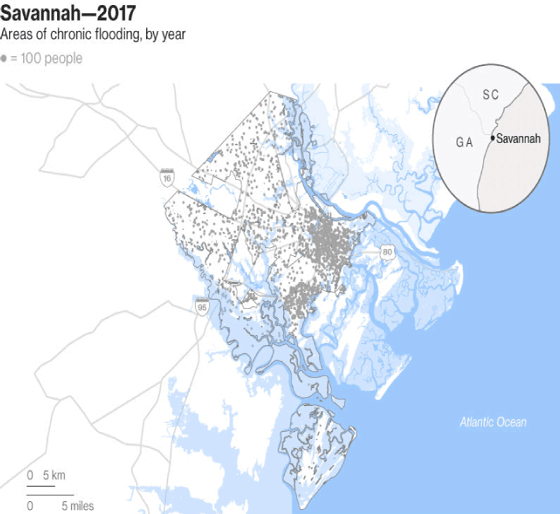

Hi, I'm Daniel, a British native living the dream in Austin, Texas. Currently, I'm a data visuals fellow for The Texas Tribune focusing on weather and politics. Before that I interned on the sports data desk at FiveThirtyEight and data viz desk with the good folks at Bloomberg both in New York City. And before that I was the graphics editor for the one and only Columbia Missourian while completing my master's degree in data journalism and visualization at the University of Missouri. #M-I-Z
If I'm not religiously watching the NBA or college basketball, I'll be in my basement studying tornado data and freaking out over other weather phenomena. If I'm not doing either of those things, you'll find me on a park bench in the sunshine enjoying a Twix.
Wichita State's Rise To The Top

MLB Bright Futures

Orange Is The New Crap

Wilson Is King Of The Fourth

Ohio State Is Used To Big Games

A New Tornado Alley Has Emerged
Rising Sea Levels
Commute From Hell

Missouri Tornadoes

Cubs vs Cardinals
MLB Wins vs ERA